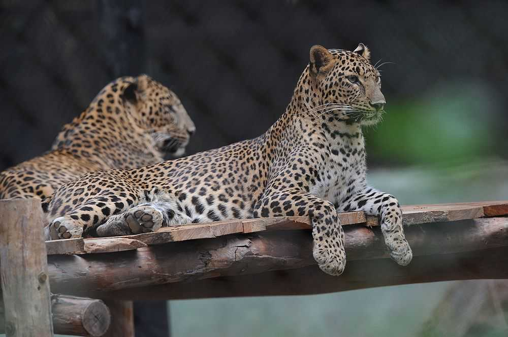
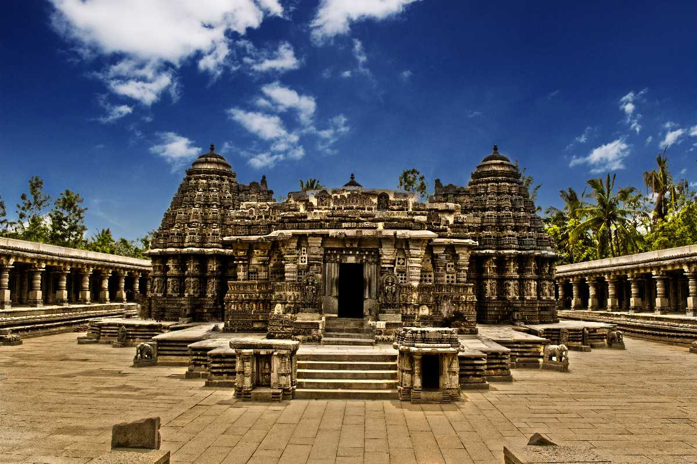
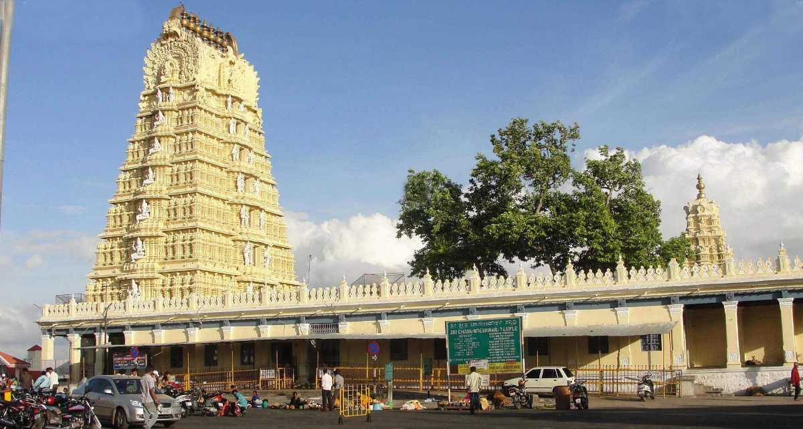
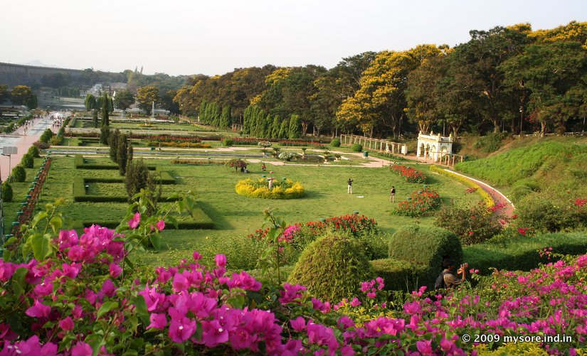
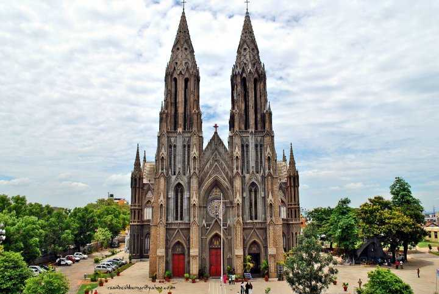
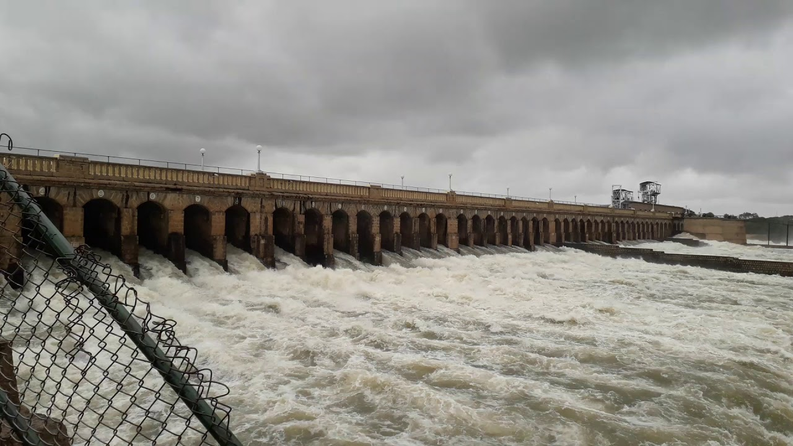

TourKarnataka.com
BEST TOURISM PLACES IN MYSURU
MYSORE PALACE
 An incredibly breathtaking example of Indo - Saracenic style of architecture, the Mysore Palace is a magnificent edifice located in Mysore in the state of Karnataka. Also known as the Amba Vilas Palace, it is the former palace of the royal family of Mysore and is still their official residence. Mysore Palace was built in the year 1912 for the 24th Ruler of the Wadeyar Dynasty and is counted amongst one of the biggest palaces in the country.The construction of the Mysore Palace was orchestrated by the Maharaja Krishnaraja Wadiyar IV referred as "Rajarishi" (saintly king) by Mahatma Gandhi. It was then further expanded by his son and the last Maharaja of Mysore, Maharaja Jayachamaraja Wadiyar.The architectural style of domes of the palace is commonly described as Indo-Saracenic, with blends of the Hindu, Mughal, Rajput, and Gothic styles. It is a three-story stone structure with marble domes, and has a 145-foot five-story tower.
An incredibly breathtaking example of Indo - Saracenic style of architecture, the Mysore Palace is a magnificent edifice located in Mysore in the state of Karnataka. Also known as the Amba Vilas Palace, it is the former palace of the royal family of Mysore and is still their official residence. Mysore Palace was built in the year 1912 for the 24th Ruler of the Wadeyar Dynasty and is counted amongst one of the biggest palaces in the country.The construction of the Mysore Palace was orchestrated by the Maharaja Krishnaraja Wadiyar IV referred as "Rajarishi" (saintly king) by Mahatma Gandhi. It was then further expanded by his son and the last Maharaja of Mysore, Maharaja Jayachamaraja Wadiyar.The architectural style of domes of the palace is commonly described as Indo-Saracenic, with blends of the Hindu, Mughal, Rajput, and Gothic styles. It is a three-story stone structure with marble domes, and has a 145-foot five-story tower.
Timings: 10:00 AM - 5:30PM Time Required: 3 Hours
Entry fee: 50Rs Holiday: No holiday
Best season to go: All seasons
MYSORE ZOO

Sri Chamarajendra Zoological Gardens, also known as the Mysore Zoo is one of the best zoological gardens in India. Maharaja Chamaraja Wodeyar established this Zoo in the year 1892 for the Royals. Furthermore, after the attainment of freedom, it was handed over to the Parks and Gardens of the State Govt. The Zoo's meticulous planning is responsible for making it a special zoological garden.It tends to create a natural habitat for the animals in it. From Big to small cats, Aquatic to terrestrial birds, and Primates to reptiles, one Hundred and Sixty-Eight species find their place in this zoo. The world's first caesarian section delivery performed on an elephant in Mysore zoo gave it global fame and recognition.Sri Chamarajendra Zoological Gardens, also known as the Mysore Zoo is one of the best zoological gardens in India.Maharaja Chamaraja Wodeyar established this Zoo in the year 1892 for the Royals.
Timings: 8:30 AM - 5:30PM Time Required: 3 Hours
Entry fee: 60Rs Holiday: Tuesday
Best season to go: All seasons
SOMANATHA TEMPLE

On the banks of Holy river Kaveri is a tiny tranquil town of Somanathapura. Here stands the finest and most exemplary monument of Hoysala architecture known as the famous Prasanna Chennakesava Temple or simply the Kesava Temple. Consecrated in the year 1258 CE, it is a Vaishnav Hindu Temple dedicated to might and beauty of Lord Krishna (Chenna= Beautiful and Kesava= Krishna). Tourists from near and far come to visit the temple to get a view of the beautiful place. The Chennakesava temple is one of the 1500 Temples built by the Hoysala Empire kings in different parts of their kingdom, and is said to be the climax development in Hoysala temple style and yet is unique in many other ways.A classic example of the famous Hoysala architecture, and is one of the three temples of the kind to be nominated in the Unesco World Heritage list. Unfortunately, this temple is no longer used as a place of worship because the idols have been broken and desecrated by the invading Muslim armies.
Timings: 5:00 AM - 9:00PM Time Required: 2 Hours
Entry fee: No entry fee Holiday: No holiday
Best season to go: All seasons
CHAMUNDESHWARI TEMPLE

The Chamundeshwari Temple is a traditional Hindu temple located on the eastern edge of Mysore at the height of 1000ft on the Chamundi hills.Dedicated to and named after goddess Durga, the temple also has statues of Nandi and Mahishasura, the demon. Being one of the oldest temples in the palace city of Mysore, the temple is a must-visit attraction for the travellers. The Chamundeshwari Temple is considered as a Shakti Peetha and is one among the 18 Maha Shakti Peethas.Located atop the Chamundi hills, the temple is usually not too crowded.The Chamundeshwari Temple is considered as a Shakti Peetha and one among the 18 Maha Shakti Peethas. It is known as Krouncha Pitham as the region was known in Puranic times as Krouncha Puri. It is said that the hair of Sati Devi fell here. The Chamundeshwari temple also has statues of the demon Mahishasura; you can even see the enormous statues from the way driving up to the temple. The temple also has a Nandi statue, which is that of a cow and holds great importance in the Hindu mythology.
Timings: 7:30 AM - 9:00PM Time Required: 1-2 Hours
Entry fee: No entry fee Holiday: No holiday
Best season to go: All seasons
BRINDAVAN GARDENS

The Brindavan Gardens, spread over 60 acres, is located at a distance of 21 km away from Mysore. Built across the notable river of India, Cauvery, it took around five years to complete the project. The well-synchronised fountain show with music, boating and well-manicured grass with flowerbeds are some of the top experiences of Brindavan Garden.
Constructed in 1932 by the Diwan of Mysore, Sir Mirza Ismail, Brindavan Garden is visited by millions of tourists every year. Divided into two parts, north and south, boating facility offered by the Karnataka State Tourism Development Corporation which connects the two parts along with a walkway bridge. The garden is maintained by the Cauvery Niravari Nigama (Cauvery Irrigation Corporation), a Government of Karnataka enterprise. It is spread across an area of 60 acres (240,000 m2). Adjoining it is also a fruit orchard spread across 75 acres (300,000 m2) and 2 horticultural farms, Nagavana (30 acres) and Chandravana (5 acres). The garden is laid out in 3 terraces which contain water fountains, Ficus trees, foliage plants such as Duranta plumaria and Euphorbia and flowering plants like Celosia, Marigold and bougainvillea.
Timings: 10:00 AM - 5:30PM Time Required: 3 Hours
Entry fee: 50Rs Holiday: No holiday
Best season to go: All seasons
ST. PHILOMINA'S CHURCH

A church at the same location was built in 1843 by Maharaja Mummadi Krishnaraja Wodeyar. An inscription which was there at the time of laying the foundation of the present church in 1933 states: "In the name of that only God - the universal Lord who creates, protects, and reigns over the universe of Light, the mundane world and the assemblage of all created lives - this church is built 1843 years after the incarnation of Jesus Christ, the Enlightenment of the World, as man". In 1926, Sir T. Thumboo Chetty who was the Huzur Secretary to the Maharaja of Mysore, Nalvadi Krishnaraja Wodeyar obtained a relic of the Saint from Peter Pisani, Apostolic Delegate of the East Indies. This relic was handed over to Father Cochet who approached the king to assist him in constructing a church in honour of St. Philomena.The Maharaja of Mysore laid the foundation stone of the church on 28 October 1933. The 1977 Hindi Bollywood Film Amar Akbar Anthony was shot at the location of St. Philomena's Church scenes were shot entirely inside of the Church.
Timings: 10:00 AM - 5:30PM Time Required: 3 Hours
Entry fee: 50Rs Holiday: No holiday
Best season to go: All seasons
KRS

Krishna Raja Sagara, also popularly known as KRS, is a lake and the dam that creates it. They are close to the settlement of Krishnarajasagara in the Indian State of Karnataka. The gravity dam made of surki mortar is below the confluence of river Kaveri with its tributaries Hemavati and Lakshmana Tirtha, in the district of Mandya.
Krishna Raja Wadiyar IV Maharaj of Mysore constructed the dam during famine despite the critical financial condition in State and the foundation stone was laid by Krishna Raja Wadiyar IV himself. One of the architects of the dam was Chief Engineer of Mysore M. Visvesvaraya. There is an ornamental garden, Brindavan Gardens, attached to the dam.In place of spillways that prevents over-topping of dams, Visvesvaraya employed 48 automatic gates that open and close at the rise and fall of water in the reservoir, in six sets, with eight in each. Each gate consists of a sill, lintel, and side grooves and plates; balance weight; float; chains and pulleys; and inlet and outlet pipes.
Timings: 10:00 AM - 5:30PM Time Required: 3 Hours
Entry fee: 50Rs Holiday: No holiday
Best season to go: All seasons